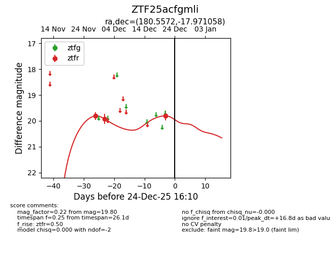
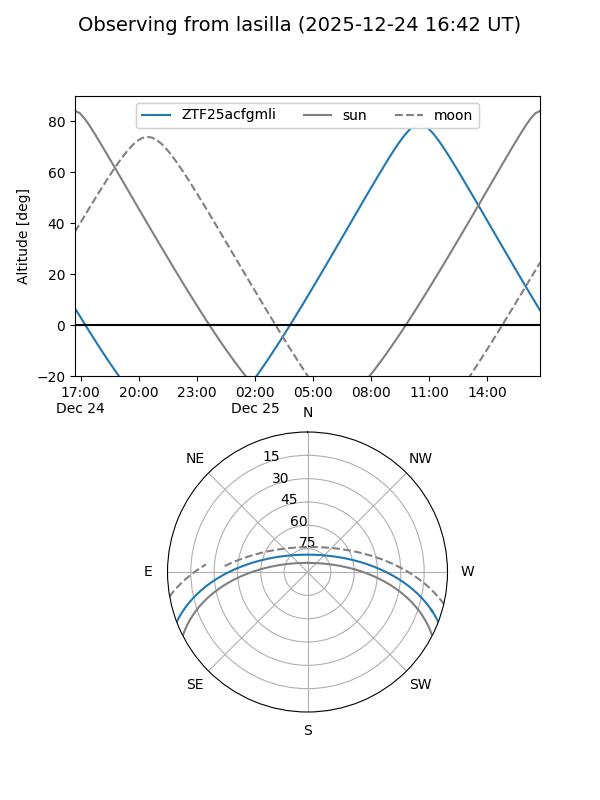
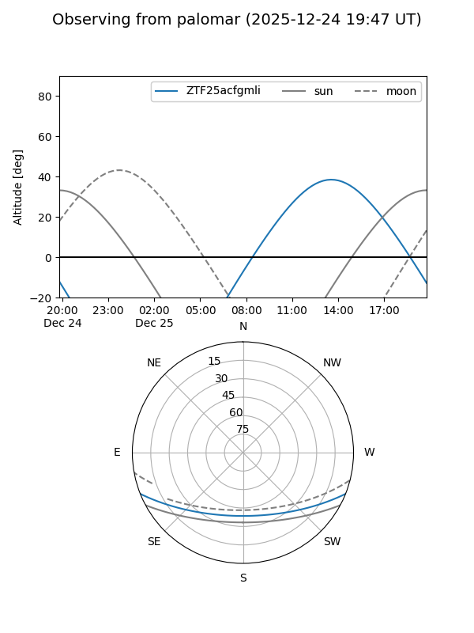

ZTF25acfgmli
Target ZTF25acfgmli at 2025-12-21 13:42
Aliases and brokers:
FINK: fink-portal.org/ZTF25acfgmli
Lasair: lasair-ztf.lsst.ac.uk/objects/ZTF25acfgmli
ALeRCE: alerce.online/object/ZTF25acfgmli
alt names
ZTF25acfgmli (ztf,fink_ztf)
Coordinates:
equatorial (ra, dec) = 180.5572,-17.97106
equatorial (HMS+DMS) = 12:02:13.72,-17:58:15.81
galactic (l, b) = (286.7486,+43.34899)
Flags:
Photometry:
last ztfr=19.80
3 ztfr detections
Lightcurve

Visibility


Additional plots